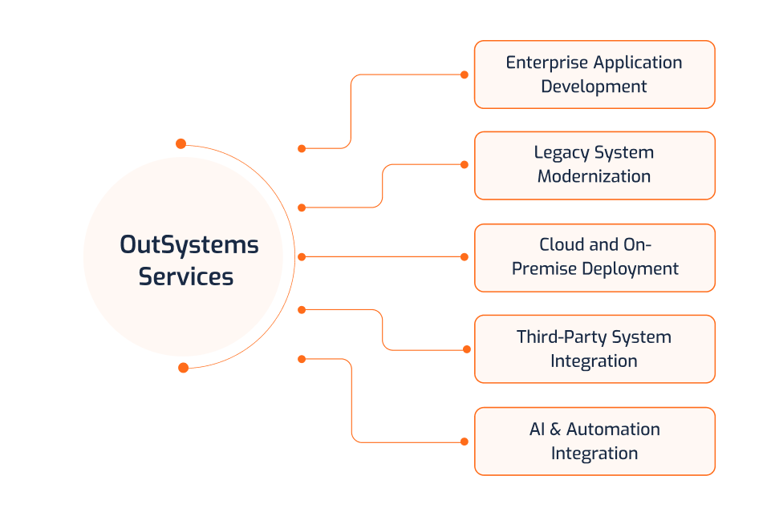
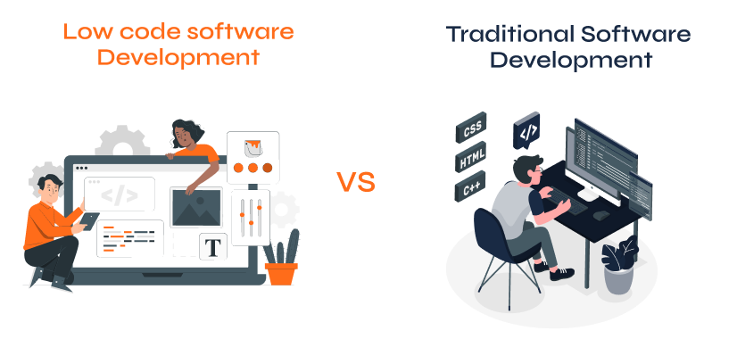
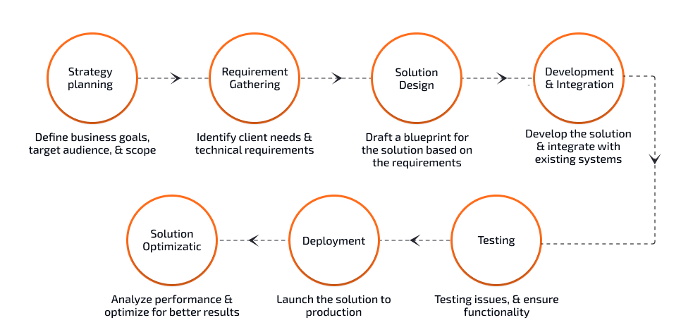

Developing an app using traditional methods is often time consuming and expensive. If you want to accelerate your business growth without involving in longer app development cycles, then it's time to rely on OutSystem, a leading low code development platform (LCDP) for application development.
As an OutSystem development company, we help businesses to transform their ideas into powerful web and mobile apps in a relatively shorter duration without compromising the quality.
With our data driven and user-centric approach and with the OutSystems mobile app development services, we deliver enterprise grade apps faster than ever that helps businesses achieve real impact and stay ahead in the digital landscape.
Transform your Business Outreach with Outsystems Development Company
OutSystems platform is a cutting-edge technology to create high performance applications with minimal coding effort. It ensures reliability and security all while taking up half the time of traditional app development time.
With certified Outsystems low-code platform developers, we offer end-to-end development services from enterprise grade app development to cloud integration and automation that streamlines the business operations for a better user experience. Our Outsystems developers will work closely with you to understand what's needed for your business growth and thereby deliver custom solutions to drive your growth.
But we don't stop there. Our expert developers don't just provide tailored solutions for your current needs but they also plan for scaling up in the future. With low-code platforms like OutSystems, we deliver scalable Outsystems web and mobile apps development solutions that adapt to your changing business demands. Thus, your applications grow with your business.
As an Outsystems mobile app development, we helps businesses create sophisticated applications that integrate with your existing systems and external services, all while maintaining the optimal speed and security. We ensure your business will reap the benefits of OutSystems as with our smooth implementation, quick turnaround times, and user-centric approach.
OutSystems Development Services - Driving Business Innovation with Scalable, High-Performance Solutions
At our Outsystems custom development company, we ensure to provide a seamless digital transformation journey by delivering OutSystems development services that meet your growing business needs. i.e., every solution provided by our experts is built to scale, adapt, and grow for long term success.

Our dedicated OutSystems development team builds high-performance applications that do more than meeting the functional requirements. We focus on creating solutions driving efficiency, increasing productivity, and providing business with competitive advantage. With OutSystems, we help with building custom workflows, advanced reporting tools, and data processing systems. Thus, our Outsystems developers craft solutions to develop business processes, streamline workflow, and give real-time insights for smarter decision making.
Our OutSystems experts help transform the legacy system into scalable and future ready apps. Our Outsystems development approach includes assessment and planning, incremental transformation, modern technology integration, engaging UI, ongoing support and optimization. With this, you are investing in a future-proof OutSystem application that drives your business towards success.
With varying deployment needs of the business, our team ensures that the OutSystems applications are deployed securely and efficiently. Thus, accelerating the growth of your business becomes easy. We tailor deployment plans in such a way that it aligns with your business requirements. In the post deployment process, we offer ongoing support and maintenance of the application that caters the business needs.
As an Outsystems mobile app development company, we also offer support for third-party system integration and thus you can connect with existing tools and systems. Without pre-built connectors and APIs, it is easy to make informed decisions.
With businesses to work on AI in the future, we integrate intelligent features with OutSystems for smoother operations. By integrating AI advancements with your applications, we help you stay ahead of the digital marketing landscape.
Key Advantages of OutSystems Low Code Development Platform
Outsystems low-code development platform is a leading platform that empowers businesses to create applications that are completely customizable at 10x faster rate than traditional coding approaches. Some of the key benefits of using OutSystems are as follows:
With pre-built drag and drop UI components, creating an app is simple. The reusable code modules eliminates redundancy and improves the scalability. Our Outsystems low-code platform developer uses single codebase to developing apps for mobile, web, and desktop is made easier.
By offering enterprise-grade security, OutSystems platform ensures your sensitive data are protected.

OutSystems Consulting Services - Expert Guidance for Optimized Solutions and Strategic Growth
For those businesses looking forward to optimizing their OutSystems solutions, we provide OutSystems consulting services guidance end-to-end. This includes application strategy and roadmap that aligns with your business objective to scalable and flexible architecture design to process automation that reduces manual effort, and performance optimization that improves speed, security, and accuracy. This way, our Outsystems app development consultants help in assisting businesses take informed decisions when it comes to development, deployment, and integration.

Outsystems Mobile App Development - Accelerating Cross-Platform Innovation
We offer OutSystems native mobile app development solutions with a comprehensive suite of features.
It includes a single codebase that supports cross-platform application development which in turn reduces app development time. With offline support, your application will work seamlessly without internet connection and hence the users can get uninterrupted service. The OutSystems platform has customizable UI and UX components accelerate the development and thus the user needs are adapted at a quicker rate. Additionally, the real-time updates will deploy the changes instantly and thus your application will be responsive to the user feedback.
Empowering Rapid Innovation and Seamless Growth with Outsystems Low Code Platform
Whether you want to innovate or evolve, with OutSystems low code platform, transforming the software development is made easier as it involves no complex coding process. Thus this solution has given a new dimension for the businesses to accelerate growth by developing high-performance apps at a minimal time frame. With reduced development time of enterprise level apps, your business will stay ahead of competition. Outsystems app development is an added advantage for those non-technical users as it lets them create and deploy apps with minimal coding. It can enhance business agility with quick response to market changes with real-time updates.
OutSystems Consulting Services - Driving Strategic Digital Transformation for Your Business
As an OutSystems consulting company, we offer comprehensive services that align with your business goals. Hire our OutSystem consultant team to create a strategic plan that will help create a digital transformation for your business. They will come up with the development lifecycle reducing development time and make strategic decisions for optimizing resources for app development. Our consultants help streamline the development process and develop solutions that align with the changing demands. As an expert OutSystems consulting service company, we develop apps with robust security that protects sensitive data.
Supercharge Your Rapid Application Development With Outsystems
With the help of OutSystems, a transformative low-code application development platform, accelerating RAD (rapid application development) is made faster. This enables businesses to create functional app models that get quick validation and feedback. The added advantage of OutSystems Rapid Application Development is it minimizes the resource requirements for developing complex app development. As the solution is fully customizable, you can implement real-time changes to stay ahead of competitors.
With the intuitive visual development environment and pre-built components, developers can use drag and drop functions instead of writing complex codes. Thus by adopting the OutSystems, you can improve your digital presence while delivering innovative solutions in the competitive digital marketing landscape.
Hire OutSystems Developers - Unlock Tailored Solutions to Drive Business Growth
If you want to transform your business goal into the next level, then hire our certified OutSystems Developer team. With the wealth of knowledge, our experts will design and develop custom applications that align with your business framework. It is possible to optimize and enhance your current application using the OutSystems platform as a way to improve the performance of your business requirements. Upon hiring our OutSystems developers, you can use the low-code capabilities of the platform to accelerate development time, reduce cost, and enhance application performance.
Final Words About Outsystem Development
In the fast-paced digitally transforming world, creating applications for business needs at a faster time frame is getting recognized. With low-code platforms like OutSystems, you can transform your business into a scalable and flexible solution that accelerates the growth. Our Outsystems consulting company empowers businesses to transform their digital presence quickly and cost effectively. With an expert OutSystems developer team, we help you build high performance apps that grow along with your business. Our OutSystems developers will understand your current requirements and provide end-to-end support from development to deployment. Partner with us to create your enterprise grade application with OutSystems that keeps you ahead in tomorrow's competitive market.
Frequently Asked Questions
OutSystems is an AI-powered low-code development platform used to develop applications at an enterprise grade that is secure, scalable, and flexible.
The key benefits of using OutSystems as an app development solution is it accelerates the app development at a lower time and cost. i.e., this low-code platform includes visual tools, pre-built components, and reusable templates leading to rapid app development.
With OutSystems, businesses can build a range of applications such as enterprise grade applications, customer facing applications, cloud-based applications, workflow automation, AI & data driven apps, cross-platform mobile apps, e-commerce solutions, etc.
Applications built on the OutSystems platform are highly secured and come with multi-layered protection. Since OutSystems updates its platform frequently, your apps remain secured. The real-time threat monitoring and risk management tools help detect and resolve potential problems to keep your application safe and reliable.
The cost of OutSystems development services can vary depending on factors like scope and complexity, customization, development time, scalability, support and maintenance offered. Typically, OutSystems development services will be between $ - $.